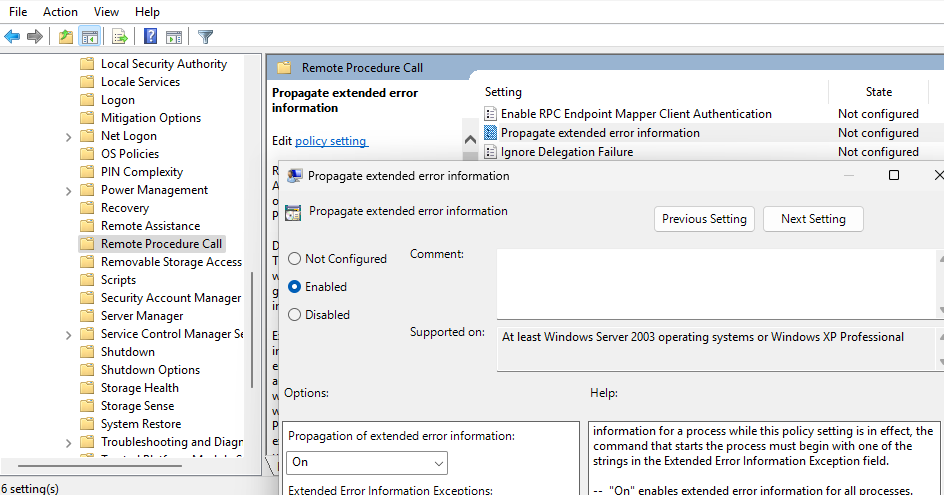
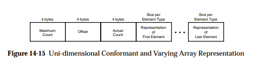
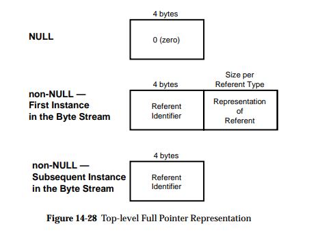

DCE/RPC & [MS-RPCE]
Note
DCE/RPC per DCE/RPC 1.1 with the [MS-RPCE] additions.
Scapy provides support for dissecting and building Microsoft’s Windows DCE/RPC calls.
Usage documentation
Terminology
NDR(andNDR64) are the transfer syntax used by DCE/RPC, i.e. how objects are marshalled and sent over the networkIDLor Interface Definition Language is “a language for specifying operations (procedures or functions), parameters to these operations, and data types” in context of DCE/RPC
NDR64 and endianness
All packets built with NDR extend the NDRPacket class, which adds the arguments ndr64 and ndrendian.
You can therefore specify while dissecting or building packets whether it uses NDR64 or not (by default: no), or its endian (by default: little)
NetrServerReqChallenge_Request(b"\x00....", ndr64=True, ndrendian="big")
Dissecting
You can dissect a DCE/RPC packet like any other packet, by calling ThePacketClass(<bytes>). The only difference is, as mentioned above, that there are extra ndr64 and ndrendian arguments.
Note
DCE/RPC is stateful, and requires the dissector to remember which interface is bound, how (negotiation), etc.
Scapy therefore provides a DceRpcSession session that remembers the context to properly dissect requests and responses.
Here’s an example where a pcap (included in the test/pcaps folder) containing a [MS-NRPC] exchange is dissected using Scapy:
>>> load_layer("msrpce")
>>> bind_layers(TCP, DceRpc, sport=40564) # the DCE/RPC port
>>> bind_layers(TCP, DceRpc, dport=40564)
>>> pkts = sniff(offline='dcerpc_msnrpc.pcapng.gz', session=DceRpcSession)
>>> pkts[6][DceRpc5].show()
###[ DCE/RPC v5 ]###
rpc_vers = 5 (connection-oriented)
rpc_vers_minor= 0
ptype = request
pfc_flags = PFC_FIRST_FRAG+PFC_LAST_FRAG
endian = little
encoding = ASCII
float = IEEE
reserved1 = 0
reserved2 = 0
frag_len = 58
auth_len = 0
call_id = 1
###[ DCE/RPC v5 - Request ]###
alloc_hint= 0
cont_id = 0
opnum = 4
###[ NetrServerReqChallenge_Request ]###
PrimaryName= None
\ComputerName\
|###[ NDRConformantArray ]###
| max_count = 5
| \value \
| |###[ NDRVaryingArray ]###
| | offset = 0
| | actual_count= 5
| | value = b'WIN1'
\ClientChallenge\
|###[ PNETLOGON_CREDENTIAL ]###
| data = b'12345678'
Scapy has opted to not abstract any of the NDR fields (see Design choices), allowing to keep access to all lengths, offsets, counts, etc… This allows to put wrong length values anywhere to test implementations.
The catch is that accessing the value of a field is a bit tedious:
>>> pkts[6][DceRpc5].ComputerName.value[0].value
b'WIN1'
Sometimes, you’ll be glad to have access to the size of a ConformantArray. Most times, you won’t.
All NDRPacket therefore include a valueof() function that goes through any array or pointer containers:
>>> pkts[6][NetrServerReqChallenge_Request].valueof("ComputerName")
b'WIN1'
Warning
Note that DceRpc5 packets are NOT NDRPacket, so you need to call valueof() on the NDR payload itself.
Building
If you were to re-build the previous packet exactly as it was dissected, it would look something like this:
>>> pkt = NetrServerReqChallenge_Request(
... ComputerName=NDRConformantArray(max_count=5, value=[
... NDRVaryingArray(offset=0, actual_count=5, value=b'WIN1')
... ]),
... ClientChallenge=PNETLOGON_CREDENTIAL(data=b'12345678'),
... PrimaryName=None
... )
If you don’t care about specifying max_count, offset or actual_count manually, you can however also do the following:
>>> pkt = NetrServerReqChallenge_Request(
... ComputerName=b'WIN1',
... ClientChallenge=PNETLOGON_CREDENTIAL(data=b'12345678'),
... PrimaryName=None
... )
>>> pkt.show()
###[ NetrServerReqChallenge_Request ]###
PrimaryName= None
\ComputerName\
|###[ NDRConformantArray ]###
| max_count = None
| \value \
| |###[ NDRVaryingArray ]###
| | offset = 0
| | actual_count= None
| | value = 'WIN1'
\ClientChallenge\
|###[ PNETLOGON_CREDENTIAL ]###
| data = '12345678'
And Scapy will automatically add the NDRConformantArray, NDRVaryingArray… in the middle.
This applies to NDRPointers too ! Skipping it will add a default one with a referent id of 0x20000. Take RPC_UNICODE_STRING for instance:
>>> RPC_UNICODE_STRING(Buffer=b"WIN").show2()
###[ RPC_UNICODE_STRING ]###
Length = 6
MaximumLength= 6
\Buffer \
|###[ NDRPointer ]###
| referent_id= 0x20000
| \value \
| |###[ NDRConformantArray ]###
| | max_count = 3
| | \value \
| | |###[ NDRVaryingArray ]###
| | | offset = 0
| | | actual_count= 3
| | | value = 'WIN'
Client
Scapy also includes a DCE/RPC client: DCERPC_Client.
It provides a bunch of basic DCE/RPC features:
connect(): connect to a hostbind(): bind to a DCE/RPC interfaceconnect_and_bind(): connect to a host, use the endpoint mapper to find the interface then reconnect to the host on the matching addresssr1_req(): send/receive a DCE/RPC request
To be able to use an interface, it must have been imported. This makes it so that the register_dcerpc_interface() function is called, allowing the DceRpcSession session to properly understand the bind/alter requests, and match the DCE/RPCs by opcodes.
In the DCE/RPC world, there are several “Transports”. A transport corresponds to the various ways of transporting DCE/RPC. You can have a look at the documentation over [MS-RPCE] 2.1. In Scapy, this is implemented in the DCERPC_Transport enum, that currently contains:
NCACN_IP_TCP: the interface is reached over IP/TCP, on a port that varies. This port can typically be queried using the endpoint mapper, a DCE/RPC service that is always on port 135.NCACN_NP: the interface is reached over a named pipe over SMB. This named pipe is typically well-known, or can also be queried using the endpoint mapper (over SMB) on certain cases.
Here’s an example sending a ServerAlive over the IObjectExporter interface from [MS-DCOM].
from scapy.layers.dcerpc import *
from scapy.layers.msrpce.all import *
client = DCERPC_Client(
DCERPC_Transport.NCACN_IP_TCP,
ndr64=False,
)
client.connect("192.168.0.100")
client.bind(find_dcerpc_interface("IObjectExporter"))
req = ServerAlive_Request(ndr64=False)
resp = client.sr1_req(req)
resp.show()
Here’s the same example, but this time asking for PKT_PRIVACY (encryption) using NTLMSSP:
from scapy.layers.ntlm import *
from scapy.layers.dcerpc import *
from scapy.layers.msrpce.all import *
ssp = NTLMSSP(
UPN="Administrator",
PASSWORD="Password1",
)
client = DCERPC_Client(
DCERPC_Transport.NCACN_IP_TCP,
auth_level=DCE_C_AUTHN_LEVEL.PKT_PRIVACY,
ssp=ssp,
ndr64=False,
)
client.connect("192.168.0.100")
client.bind(find_dcerpc_interface("IObjectExporter"))
req = ServerAlive_Request(ndr64=False)
resp = client.sr1_req(req)
resp.show()
Again, but this time using PKT_INTEGRITY (signing) using SPNEGOSSP[KerberosSSP]:
from scapy.layers.kerberos import *
from scapy.layers.spnego import *
from scapy.layers.dcerpc import *
from scapy.layers.msrpce.all import *
ssp = SPNEGOSSP(
[
KerberosSSP(
UPN="Administrator@domain.local",
PASSWORD="Password1",
SPN="host/dc1",
)
]
)
client = DCERPC_Client(
DCERPC_Transport.NCACN_IP_TCP,
auth_level=DCE_C_AUTHN_LEVEL.PKT_INTEGRITY,
ssp=ssp,
ndr64=False,
)
client.connect("192.168.0.100")
client.bind(find_dcerpc_interface("IObjectExporter"))
req = ServerAlive_Request(ndr64=False)
resp = client.sr1_req(req)
resp.show()
Here’s a different example, this time connecting over NCACN_NP to [MS-SAMR] to enumerate the domains a server is in:
from scapy.layers.ntlm import NTLMSSP, MD4le
from scapy.layers.dcerpc import *
from scapy.layers.msrpce.all import *
ssp = NTLMSSP(
UPN="User",
HASHNT=MD4le("Password"),
)
client = DCERPC_Client(
DCERPC_Transport.NCACN_NP,
ssp=ssp,
ndr64=False,
)
client.connect("192.168.0.100")
client.open_smbpipe("lsass") # open the \pipe\lsass pipe
client.bind(find_dcerpc_interface("samr"))
# Get Server Handle: call [0] SamrConnect
serverHandle = client.sr1_req(SamrConnect_Request(
DesiredAccess=(
0x00000010 # SAM_SERVER_ENUMERATE_DOMAINS
)
)).ServerHandle
# Enumerate domains: call [6] SamrEnumerateDomainsInSamServer
EnumerationContext = 0
while True:
resp = client.sr1_req(
SamrEnumerateDomainsInSamServer_Request(
ServerHandle=serverHandle,
EnumerationContext=EnumerationContext,
)
)
# note: there are a lot of sub-structures
print(resp.valueof("Buffer").valueof("Buffer")[0].valueof("Name").valueof("Buffer").decode())
EnumerationContext = resp.EnumerationContext # continue enumeration
if resp.status == 0: # no domain left to enumerate
break
client.close()
Note
As you can see, we used the NTLMSSP security provider in the above connection.
There are extensions to the DCERPC_Client class:
the
NetlogonClient, worth mentioning because it implements its ownNetlogonSSP:
from scapy.layers.msrpce.msnrpc import *
from scapy.layers.msrpce.raw.ms_nrpc import *
client = NetlogonClient(
auth_level=DCE_C_AUTHN_LEVEL.PKT_PRIVACY,
computername="SERVER",
domainname="DOMAIN",
)
client.connect_and_bind("192.168.0.100")
client.negotiate_sessionkey(bytes.fromhex("77777777777777777777777777777777"))
client.close()
the
DCOM_Client(unfinished)
Server
It is also possible to create your own DCE/RPC server. This takes the form of creating a DCERPC_Server class, then serving it over a transport.
This class contains a answer() function that is used to register a handler for a Request, such as for instance:
from scapy.layers.dcerpc import *
from scapy.layers.msrpce.all import *
class MyRPCServer(DCERPC_Server):
@DCERPC_Server.answer(NetrWkstaGetInfo_Request)
def handle_NetrWkstaGetInfo(self, req):
"""
NetrWkstaGetInfo [MS-SRVS]
"returns information about the configuration of a workstation."
"""
return NetrWkstaGetInfo_Response(
WkstaInfo=NDRUnion(
tag=100,
value=LPWKSTA_INFO_100(
wki100_platform_id=500, # NT
wki100_ver_major=5,
),
),
ndr64=self.ndr64,
)
Let’s spawn this server, listening on the 12345 port using the NCACN_IP_TCP transport.
MyRPCServer.spawn(
DCERPC_Transport.NCACN_IP_TCP,
port=12345,
)
Of course that also works over NCACN_NP, with for instance a NTLMSSP:
from scapy.layers.ntlm import NTLMSSP, MD4le
ssp = NTLMSSP(
IDENTITIES={
"User1": MD4le("Password"),
}
)
MyRPCServer.spawn(
DCERPC_Transport.NCACN_NP,
ssp=ssp,
iface="eth0",
port=445,
ndr64=True,
)
To start an endpoint mapper (this should be a separate process from your RPC server), you can use the default DCERPC_Server as such:
from scapy.layers.dcerpc import *
from scapy.layers.msrpce.all import *
DCERPC_Server.spawn(
DCERPC_Transport.NCACN_IP_TCP,
iface="eth0",
port=135,
portmap={
find_dcerpc_interface("wkssvc"): 12345,
},
ndr64=True,
)
Note
Currently, a DCERPC_Server will let a client bind on all interfaces that Scapy has registered (imported). Supposedly though, you know which RPCs are going to be queried.
Debugging with extended error information (eerr)
To debug a RPC call, you can enable the forwarding of Extended Error Information in Computer Configuration > Administrative Templates > System > Remote Procedure Call on the remote computer.

Once this is done, load EERR in Scapy (in your script) as such:
from scapy.layers.msrpce.mseerr import *
To enable parsing of the extended error information. Those information will provide a more in-depth stack trace of errors, if available.
Passive sniffing
If you’re doing passive sniffing of a DCE/RPC session, you can instruct Scapy to still use its DCE/RPC session in order to check the INTEGRITY and decrypt (if PRIVACY is used) the packets.
from scapy.all import *
# Bind DCE/RPC port
bind_bottom_up(TCP, DceRpc5, dport=12345)
bind_bottom_up(TCP, DceRpc5, dport=12345)
# Enable passive DCE/RPC session
conf.dcerpc_session_enable = True
# Define SSPs that can be used for decryption / verify
conf.winssps_passive = [
SPNEGOSSP([
NTLMSSP(
IDENTITIES={
"User1": MD4le("Password1!"),
},
),
])
]
# Sniff
pkts = sniff(offline="dcerpc_exchange.pcapng", session=TCPSession)
pkts.show()
Warning
NTLM, KerberosSSP and SPNEGOSSP are currently supported. NetlogonSSP is still unsupported.
Define custom packets
TODO: Add documentation on how to define NDR packets.
Design choices
NDR is a rather complex encoding. For instance, there are multiple types of arrays:
fixed arrays
conformant arrays
varying arrays
conformant varying arrays
All of which have slightly different representations on the network, but generally speaking it can look like this:

Those lengths are mostly computable, but this raises the question of: what should Scapy report to the user?.
Some implementations (like impacket’s), have chosen to abstract the lengths, offsets, etc. and hide it to the user. This has the big advantage that it makes packets much easier to build, but has the inconvenience that it is in fact hiding part of the information contained in the packet, which really is against Scapy’s philosophy.
The same happens when encoding pointers, which looks something like this:

where it is tempting to hide the referent_id part, which is on Windows in most parts irrelevant.
In Scapy, you will find all the fields. The pros are that it is exhaustive and doesn’t hide any information, the cons is that you need to use the utils (valueof() on dissection, implicit any2i on build) in order for it not to be a massive pain.